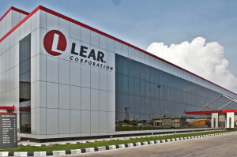
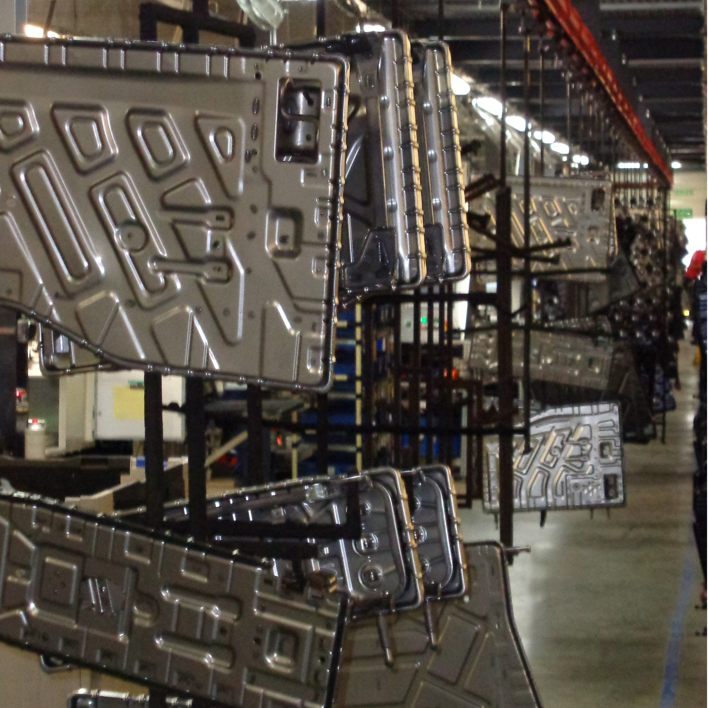
Lear Tychy
Structures — завод, що належить підрозділу Car Seats Division. В результаті таких
операцій, як зварювання, згинання, зварювання, фарбування і складання, створюються конструкції автомобільних
сидінь.
На заводі систематично впроваджуються новітні технології, які дозволяють постійно вдосконалювати
вироблену продукцію та відповідати очікуванням найвибагливіших клієнтів.Lear Corporation – лідер у виробництві
сидінь та електрики для автомобільної промисловості. Lear Corporation Poland є найбільшим працедавцем серед
представників даної галузі в країні. Робота в Польщі об'єднує близько 10 000 співробітників на 6 виробничих
підприємствах і 2 центрах розробки. Робота в Польщі Lear Corporation Poland зосереджена у двох напрямках:
виробництво автомобільних сидінь, а також електричних і електронних систем для транспорту.
Про місто Тихи
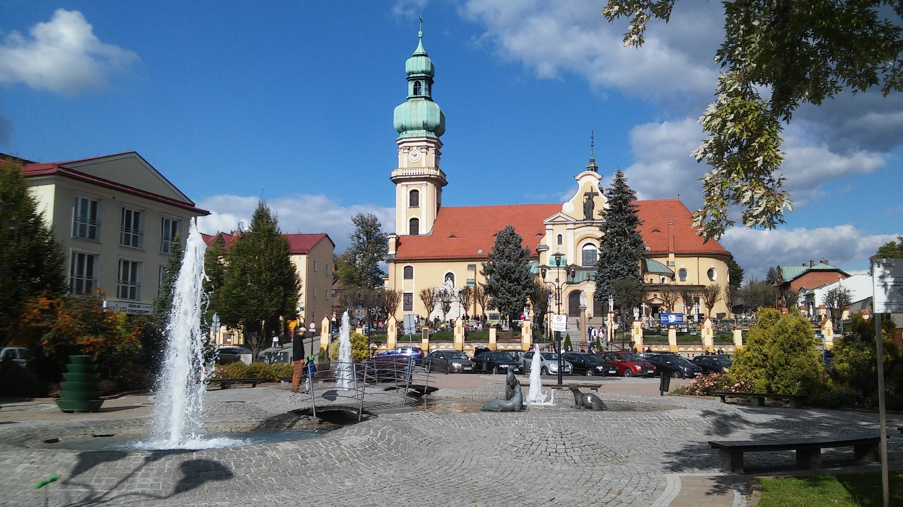
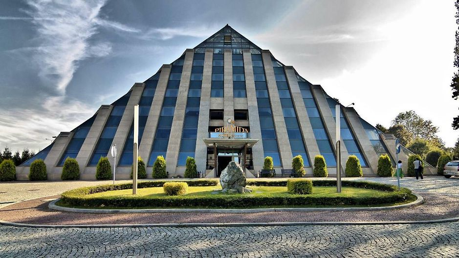
Містечко Тихи - Соціалізм у всій його красі, – скаже хтось. Спальний район Катовіце,
де марно шукати щось гідне уваги. Суцільні багатоповерхівки. Місто багато років намагається здолати цей
стереотип. І є такі, що вірять - Тихи можуть бути восьмим чудом світу!
Тихи мали стати соціалістичним
ідеальним містом. Після війни один за одним почали з'являтися райони у різних
архітектурних стилях - від соціалістичного реалізму до модернізму. У місцевих музеях часів ПНР багато побутових
предметів повсякденного вжитку, історії місцевих спортсменів і можна дізнатись про… мистецтво пиття пива. Тихи –
це місто малого Фіата та Ришарда Ріделя. Хоча харизматичний лідер групи Dżem загинув майже чверть століття тому,
ви все ще можете випити з ним бокал пінистого…
Тихи є одним із найбільших міст Сілезького воєводства.
Незважаючи на те, що місто з трьох сторін оточене лісами,
тут сильні поривисті вітри, а погода винятково примхлива. А все через Моравську браму - характерне зниження між
Карпатами та Судетами, кудою прослизають навіть гальні вітри.
- Ми живемо на протягах, - зітхають тутешні. Але там, де зараз шмигають дошкульні вітри, давніше пролягав
торговий шлях з півдня на північ Європи. Завдяки чому в невеликому сільськогосподарському поселенні віддавна
процвітали ремесло та торгівля. Але Тихи як місто по-справжньому народилися лише після Другої світової
війни.
Місто можна пізнавати різними способами, найпростіше – йти від залізничного вокзалу в центр. Проте
найбільш показовою, мабуть, буде подорож із півночі на південь, - такий своєрідний шлях через архітектурні
століття та
різні бачення міста, які, в кінцевому підсумку, утворюють гармонійне ціле
При виборі такого маршруту перша зупинка буде на вулиці Асника, а наступні – на площі св. Анни та на центральній
площі Району А. Це найдавніша частина нового міста. Тут будівлі у стилі соцреалізму, прикрашені не тільки
квітковими мотивами та тваринними візерунками, але й зображеннями робітників. До всього є характерні пам'ятники:
робітниці, яка тримає кельму в одній руці, а в іншій - мініатюру будинку; у десять разів збільшеної
гірничорудної лампи; статуї шахтаря і сталеливарника.
Далі соцреалізм поступово переходить у модернізм. Перебуваючи біля житлових районів B, C і E, варто зупинитися
на площі Бачинського, яка за часів народної Польщі носила ім’я партдіяча, першого і єдиного президента ПНР,
офіцера НКВД, переконаного сталініста Болеслава Берута. Тоді тут збиралися першотравневі демонстрації, а також
процвітали торгівля та активне громадське життя.
Найбільш характерною будівлею цієї частини міста є будинок, увінчаний чотирма вежами. До недавнього часу тут був
кінотеатр "Андромеда", на момент його відкриття – найбільший кінотеатр у Польщі. Його зал може вмістити 650
людей. Неподалік парк з скульптурами Ведмедиків - одного з символів міста.
Наступні житлові райони є прикладом архітектури модернізму, але трапляються й будівлі, які представляють
постмодернізм. Тут, насамперед, звернете увагу на приміщення шахтарського Клубу NOT. Клуб запроектований Мареком
Дзьєконським і вважається найкрасивішим будинком у Тихах. Будівля нагадує дві, накладені одна на одну, трапеції,
при цьому другий поверх більший, ніж перший. Колись тут був закритий елітний клуб, до якого можна було потрапити
лише будучи членом Асоціації інженерів та техніків гірничодобувної справи.
У свою чергу постмодерністську архітектуру уособлює костел Святого Духа, зведений на початку 1980-х років за
проектом Станіслава Нємчика, відомого як Польський Гауді. За задумом автора, храм формою нагадує ковчег. Його
інтер'єр прикрашений, зокрема, іконами Єжи Новосельського.
Дещо поза маршрутом стоїть готель "Піраміда", який також вважається символом міста. Як запевняють його власники,
завдяки своїй специфічній формі та розташуванню на чакрамі (місці сили), будівля виділяє позитивну енергію.
Повільна прогулянка уздовж цих райончиків може тривати декілька годин. Але любителі сучасної архітектури та
історії, безумовно, не матимуть відчуття втраченого часу. Місто виглядає як "велика виставка архітектурних
стилів просто неба".
Любителям пива слід обов’язково завітати у Музей Тиських Княжих броварень. Золотистий
трунок варять у Тихах з
1613 року. У XIX столітті місцева пивоварня була однією з найбільших в Європі, а через кілька десятиліть
експортував пиво навіть у Південну Америку!
Сьогодні Музей лежить на Маршруті пам’яток техніки ( Szlak Zbytków Techniki).
Музей розмістився в невеликій каплиці євангелістів з 1902 р. Тут, поміж іншого, є колекції старих пляшок,
фотографій та робочих інструментів. Але відвідувачі можуть також бавитись різними інтерактивними новинками.
Екскурсії проводяться кількома мовами, представлений навіть сілезький діалект. Є майстер-класи з експертом
дегустації пива, так званим пивним сомельє. А можна тихо випити пива в Тихах самому. Дуже приємний музей у
цілому!
Нехай Тихи не мають таких шансів стати туристичним центром як Краків, Гданськ чи Вроцлав. Однак місто
по-своєму
цікаве, з власним характером і вишуканим пивним присмаком. Цілком добра ідея – відвідати Тихи на вихідні!
Фабрика по виробництву меблів "Meble Wojcik"
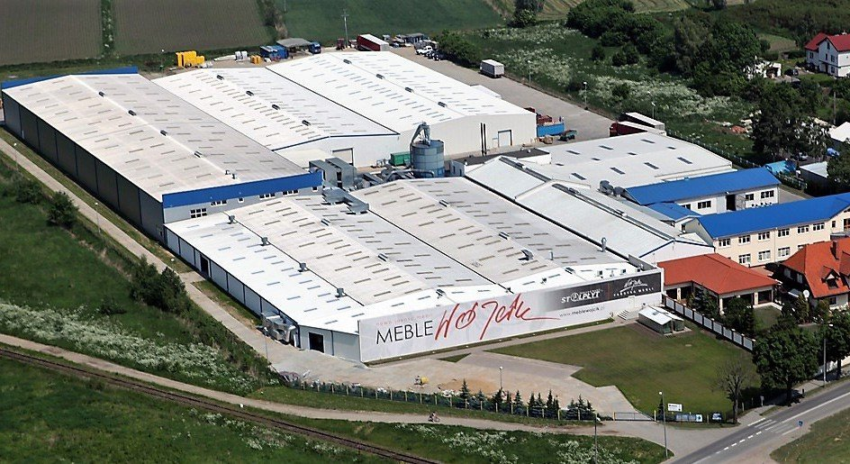
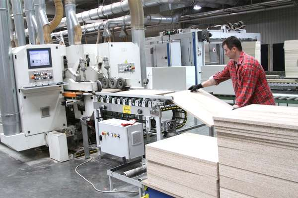
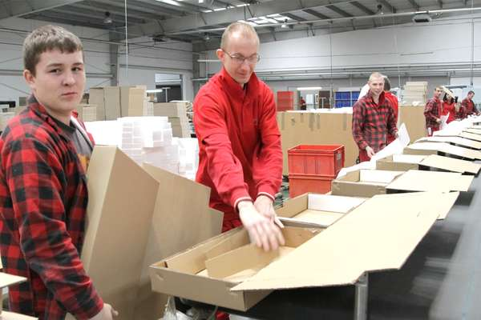
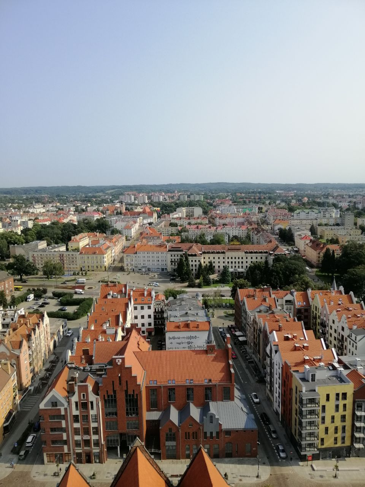
Перший завод був заснований столяром Лешеком Войціком у 1986 році. З тих пір компанія перебуває в руках сім’ї
Войцік, і вона включає 3 сучасні фабрики, розташовані в Ельблонгу, які спеціалізуються на виробництві коробних
меблів для самостійного монтажу. Щомісяця меблі Wojcik виходять на понад 20 ринків, переважно
європейських, таких як Польща, Німеччина, Австрія, Великобританія, Швейцарія, Чехія, Словаччина,
Білорусь, Україна
та багато інших. Територія складається з сучасного машинного парку авторитетних виробників (HOMAG,
SCM) та високого складу, оснащеного вдосконаленою ІТ-системою WMS. Як результат, наша пропозиція
характеризується високим рівнем якості виробництва та логістичного обслуговування. Щомісяця ми використовуємо
понад 11 тисяч. м 3 плит, а наші виробничі лінії залишають понад 50 тисяч. предмети меблів. Наші співробітники –
це досвідчена команда з понад 1400 людей, яка працює над найповнішим сервісом за замовленнями наших клієнтів.
Завдяки розробленій програмі навчання та навчання на наших заводах, ми посідаємо одне з найпопулярніших місць
роботодавців у регіоні. Ми часто уявляємо виробництво меблів як досить складний ручний процес, що вимагає 100%
залучення столяра до створення цілісного предмету меблів. Переконайтесь самі, як виглядає сучасне виробництво
меблів на заводах Меблі Wojcik.
Про місто Ельблонг
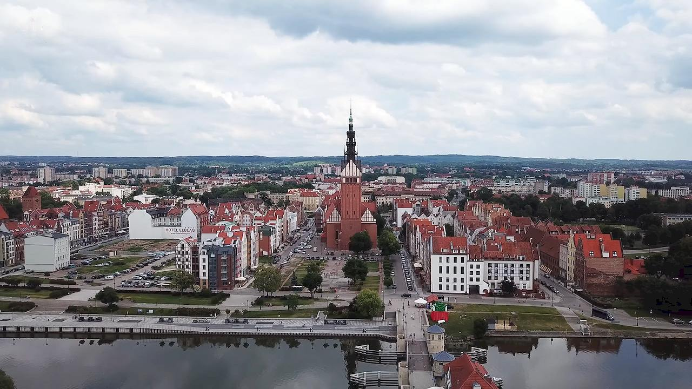
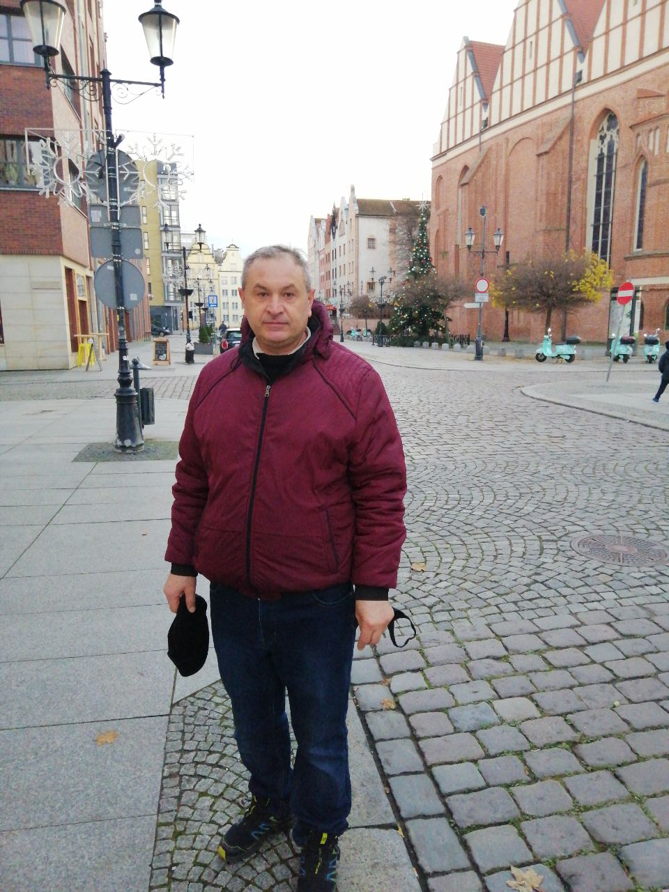
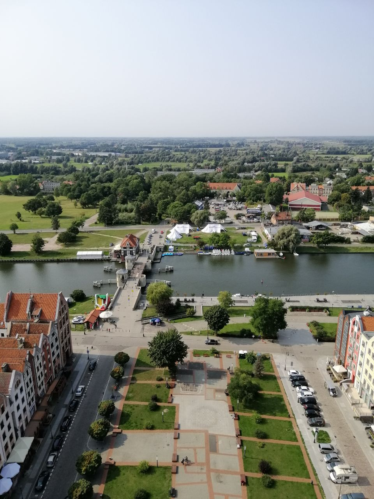
Місто
Ельблонг закладено Германом фон Балком - комтуром ордену шпиталю св. Марїі з Єрусаліму в 13 ст. Заселено
переселенцями з Любека. Було резиденцією тевтонців, яку 1309 року перенесли до Мальборка.Рукопис
пам'ятки «Польська правда» було знайдено 1868 року в Ельблонґу (звідси ще одна назва пам'ятки — Ельблонзька
книга), де він зберігався у міському архіві до ІІ-ї світової війни. Перші вихідці з теренів України могли
перебувати в Ельблонгу з давніх часів. Зокрема, 1551 р. ректором ельблонзької гімназії став Микола Геласінус
(Смешкович) зі Львова. Українці могли перебувати в місті і за часів Великої північної війни, коли 1710 р.
війська Петра І виперли шведів з Ельблонгу та перебували тут до 1712 р. Російські війська, які підтримували
Августа ІІІ, повторно окупували Ельблонг в 1733-1736 рр. і ще раз під час Семирічної війни (1756-1763 рр.) в
1758-1762 рр. Перші документальні свідчення присутності більшого числа українців у місті
відносяться до періоду Другої Світової війни і пов'язані з перебуванням в’язнів українського походження у
філіях концентраційного
табору Штуттгоф. Спочатку їх утримували на так званій фабриці пензлів та щіток Ноймана на вулиці Грюнвальдській.
Звідти їх перевели до бараків, що розміщувались на сучасній вулиці Фредри. З вересня 1944 р. в’язнів утримували
також в бараках на вул. Фрета, де знаходилися підтабори Штуттгофа, які обслуговували заклади Шихау (Lager XIII,
XVII та XXI). Наразі від колишнього табору залишився лише льох, де зберігали овочі. А між вул. Фредри та
залізничними коліями розміщено пам’ятний камінь. З того часу під Ельблонгом на території парку Проховня
знаходиться невелике кладовище померлих у підтаборах Штуттгофа.
У місті розміщено танк-пам’ятник Т-34-85, який нагадує про рейд 8 танків капітана Геннадія Львовича Дяченка
(українця за походженням), які навесні 1945 р. прорвалися у місто, що готувалося до оборони, та пройшли його
наскрізь. До 2017 року у місті існувала вулиця Дяченка, яку було перейменовано на Старовейську (Старосільську).
Події війни залишили в Ельблонгу цвинтар солдатів радянської армії на Агриколі. У 1945 році радянських солдатів
також було поховано на колишньому протестантському цвинтарі на розі вул. Садової та Бема.